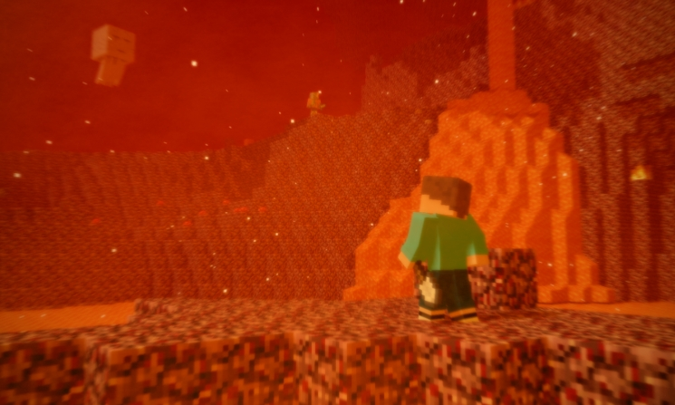

Nether adalah dimensi bawah tanah di Minecraft yang terkenal ekstrem, berbahaya, dan dipenuhi oleh lautan lava yang tak berujung. Dimensi ini dirancang sebagai tempat pembuktian nyali bagi para petualang yang ingin meningkatkan kualitas perlengkapan mereka ke tingkat tertinggi.

Nether Fortress adalah struktur raksasa berbentuk jembatan-jembatan panjang yang saling terhubung dan terbuat dari Nether Brick merah tua. Benteng ini adalah bangunan paling wajib dicari jika kamu ingin menamatkan Minecraft.

Bastion Remnant adalah kastil kuno berukuran sangat besar dan hitam yang terbuat dari batu Blackstone. Bangunan ini merupakan markas utama dari ras Piglin dan Piglin Brute. Kastil ini biasanya memiliki beberapa tipe ruangan, seperti ruangan harta karun, ruang kandang Hoglin, atau jembatan besar.
 The End
The End